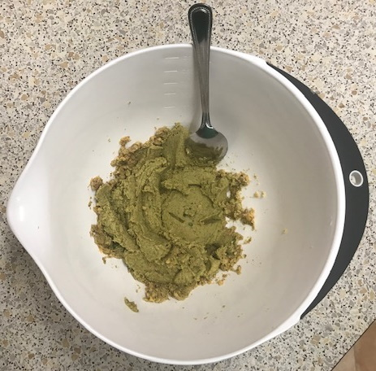
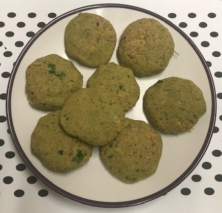

Falafels
Prepare
- Mix
- 400g tin chickpeas
- ½ onion finely chopped
- 2 cloves garlic finely chopped
- 2 tbsp wholemeal flour
- ½ tsp baking powder
- Add and mix
- 1 tsp ground cumin
- 1 tsp ground coriander
- ½ tsp cinnamon
- ½ tsp chilli powder
- Add and blitz
- small handful fresh coriander chopped
- small handful parsley chopped
- Shape into burgers
Cook
- Fry in sunflower oil for 2-3 mins on both sides until brown and crispy
- Drain on paper
- Or air fry for 20 mins at 200°C
Serving
- pittas, wraps
- tzatziki, hummus, tahini, tomato salsa
- lettuce, tomatoes, cucumber, pomegranate, pickled turnip / beetroot
- splash of lemon or lime juice
Notes
- Want as little liquid as possible otherwise insides will be wet
- Too much herbs will make dough too wet
- Plenty of oil gives falafels more flavour and colour
- More spice better than too little
- Can use 1 tbsp ras el hanout instead of other spices
Pics

